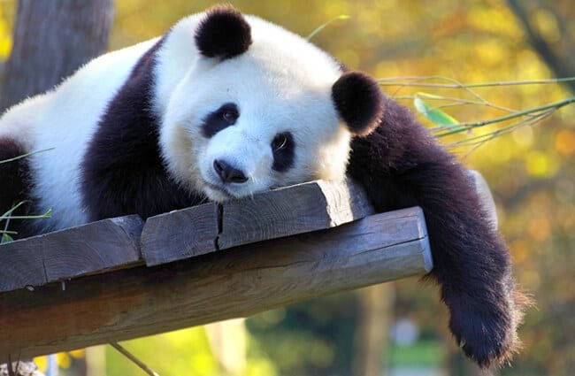
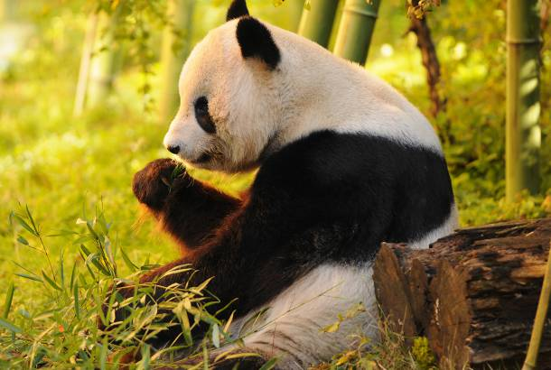
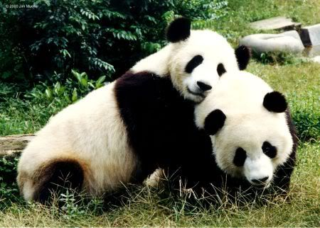

A junior computer engineering student who studies front end engineering
and wishes to master it.
"Do not go gentle into that good night , Rage , Rage against the dying of the light."
Pandas are in danger
June 30 ,2020 by Abdullah

Gambino the panda , Lumbardo forests
Little Gambino The Panda has lost the will
to live, he suffers from severe depression . Due to
living in far places and the number of the pandas has decreased dramatically during the
past 3 years.

Burrito the panda , Cocona forests
Burrito "Gambino's brother" has lost his brother from 2 years
and they could not find each other since then, some fellows attacked them back then and they ran
in different ways back then.
But luckily, people at the forest of lumbardo found Burrito and they noticed
that he has the same birth sign as the panda they found earlier in cocona forests
so they brought the brothers back together.

Reunion of the brothers , Lumbardo forests
And now they live happily in the lumbardo forrests.